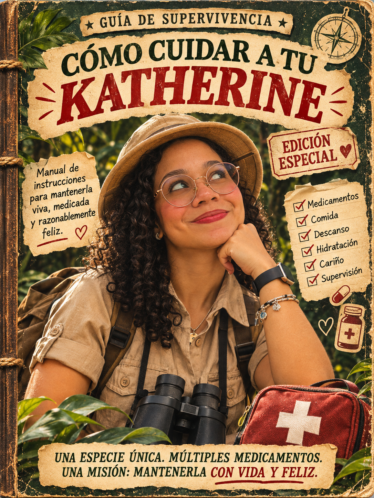
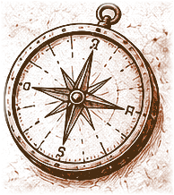
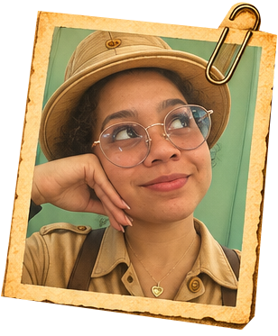
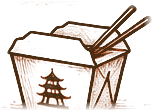
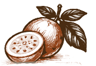
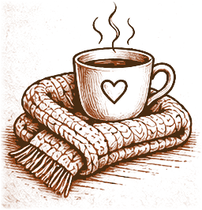
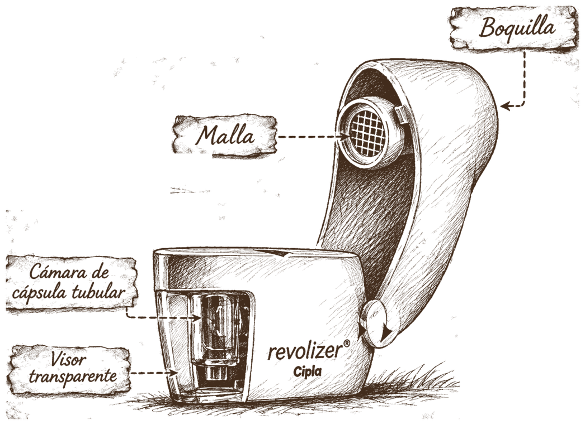
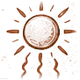

✦ CUADERNO DE EXPEDICIÓN Cómo cuidar a tu Katherine

02
Cómo cuidar a tu Katherine
Departamento de Investigación y Conservación de Katherines · Cuaderno de campo
Manual de supervivencia para exploradores valientes, pacientes y extraordinariamente cariñosos. Edición de campo, ejemplar especial.

Advertencia del Departamento: este manual contiene información sobre una especie extraordinaria, sensible y de incalculable valor. Su cuidado requiere atención, paciencia, conocimientos básicos de supervivencia y abundantes demostraciones de cariño. No se recomienda emprender esta expedición sin disposición para escuchar, acompañar y aprender.
03
Prólogo: una misión extraordinaria
Estimado explorador:
Si este manual llegó a tus manos, se te ha confiado una de las misiones más importantes de tu vida: cuidar a una Katherine.
No es una tarea cualquiera. Las Katherines son seres extraordinarios, con una sensibilidad especial, costumbres muy particulares y una capacidad admirable para llenar de vida cualquier territorio.
Aun así, hasta la exploradora más valiente necesita cuidados, comprensión y un lugar seguro donde descansar.
En estas páginas vas a descubrir sus rutinas, sus gustos, los peligros que conviene evitar y los pequeños secretos para mantenerla cómoda, tranquila y feliz.
No hace falta ser experto en expediciones. Solo hay que prestar atención, respetar sus necesidades y recordar que detrás de cada instrucción hay una persona que merece cuidado y cariño.
Regla fundamental del explorador: una Katherine no necesita un cuidador perfecto. Necesita alguien dispuesto a conocerla, escucharla y quedarse a su lado.
Documentos complementarios: notas del explorador y certificado oficial de cuidador.
05
Expedición I: identificación de Katherine
«Antes de proteger a una especie extraordinaria, hay que conocer su naturaleza».

Nombre de la exploradora:Katherine.
Clasificación del Departamento: ser humano extraordinariamente sensible, cariñoso y merecedor de protección especial.
Características principales
Katherine es sensible, con emociones profundas y una manera muy suya de vivir el mundo. Puede ser muy cariñosa, pero también necesita sentirse escuchada, respetada y comprendida. Entre sus actividades favoritas está bailar, la mejor forma de expresar alegría y disfrutar el momento.
Provisiones que despiertan su felicidad


Comida china, jugo de chinola, bailar y recibir cariño y compañía.
Situaciones que deben evitarse
Katherine no soporta que le mientan, que la ignoren ni que le hablen en tono fuerte. Una conversación respetuosa resuelve mucho más que levantar la voz.
Comportamiento en días difíciles

Cuando está triste, cansada o enferma, Katherine se vuelve más sensible, más llorosa y necesita más cariño. En esos días suele preferir que la mimen y la acompañen en silencio, sin juzgarla ni cuestionar lo que siente.
No hace falta tener una solución inmediata para cada emoción. A veces la mejor forma de cuidarla es simplemente quedarse cerca.
06
Expedición II: el ritual diario
Organizar los suministros diarios es una de las responsabilidades más delicadas del explorador. Estas son las rutinas que Katherine ha comunicado.
01. Al despertar, el inicio de la expedición. Después del desayuno toma desvenlafaxina 50 mg, una tableta, y clonazepam 2.5 mg/ml, 2 gotas.
02. A las 3:00 p. m., la parada de reabastecimiento. Clonazepam 2.5 mg/ml, 2 gotas.
03. Una hora antes de dormir, preparando el campamento nocturno. Clonazepam 2.5 mg/ml, 6 gotas disueltas en agua. Metaspray si corresponde, según su indicación médica.
07
Expedición II: registro de suministros
Momento
Clonazepam
Mañana
2 gotas
3:00 p. m.
2 gotas
Antes de dormir
6 gotas
Total del día
10 gotas
08
Expedición III: el botiquín del explorador
«No todos los peligros del territorio se ven. Algunos llegan en forma de dolor de cabeza».
Katherine sufre migrañas, y para enfrentarlas cuenta con un pequeño arsenal.
Medicamento
Función en la expedición
Menzetamol
Aliado contra el dolor
Enantyum 25
Refuerzo contra el dolor
Ketomax 20 mg
Uso sublingual para cuando la migraña es insoportable
Sumigram
Prohibido en este campamento. Katherine prefiere evitarlo por el riesgo de usarlo con frecuencia y por su efecto en el corazón
09
Expedición III: reglas del botiquín
Cuando aparece una migraña: luces bajas, silencio y cero preguntas innecesarias. Ofrécele agua, acompáñala y deja que ella decida qué toma, según su plan médico.
10
Expedición IV: equipamiento respiratorio

Katherine viaja con su propio equipo de respiración.
Airplus: su tratamiento con budesonida. Se usa tal como está indicado en su envase.
Revolizer: el dispositivo inhalador que la acompaña. Cada inhalador tiene su técnica, así que el explorador deja que ella lo use o le pregunta cómo se hace antes de ayudar.
Metaspray: el spray nasal de su rutina, para usar cuando corresponda.
11
Expedición V: los peligros del territorio
Peligro I: los mariscos
Katherine es alérgica, así que los mariscos son terreno prohibido. El explorador revisa ingredientes, pregunta cómo se preparó la comida y recuerda que la contaminación cruzada también cuenta. Un plato "sin camarones" cocinado en la misma plancha sigue siendo una trampa.
12
Expedición V: peligro II: el calor excesivo

Con mucho calor, a Katherine se le enrojece la piel y le da comezón. Lo que le funciona es alejarse del sol, ponerse crema humectante y no rascarse. Si los síntomas son intensos o se alargan, toca ver a un médico.
13
Expedición VI: provisiones permitidas y prohibidas
Provisiones favoritas: comida china, jugo de chinola y algo dulce para los días en que necesita consuelo.
Provisiones prohibidas
Provisión
Estado
Mariscos
Prohibidos por alergia
Refrescos
Fuera del campamento
Chocolate
Fuera del campamento
Ketchup
Fuera del campamento
Colorantes alimentarios
Fuera del campamento
Alcohol
Prohibido mientras dure el tratamiento psiquiátrico o hasta nueva indicación médica
14
Expedición VI: protocolo de la comida china
Es su favorita, pero a veces esconde camarones o salsas con mariscos. Por eso, la regla es pedir siempre sin camarones y avisar en el restaurante que Katherine es alérgica. Si el lugar no puede asegurar que no habrá contaminación cruzada, se cambia de restaurante. Un buen explorador sabe que la comida favorita se disfruta más cuando es segura.
Nota del explorador: alimentar a una Katherine es conocer lo que le gusta y también lo que debe quedarse fuera del plato.
15
Expedición VII: transportando a Katherine
Katherine puede marearse durante los desplazamientos.
Situaciones que favorecen el mareo
Viajar en el asiento trasero, usar el teléfono u otras pantallas con el vehículo en movimiento y hacer actividades visuales que empeoran el malestar.
Estrategias habituales
Masticar chicle o intentar dormir durante el viaje la ayuda. Cuando sea posible y seguro, que viaje en un asiento desde el que mire hacia adelante, al horizonte. Siempre con el cinturón de seguridad puesto.
Una observación sobre su visión
Katherine ve con dificultad a largas distancias. El explorador debe tenerlo en cuenta al leer señales lejanas, reconocer objetos o moverse por lugares desconocidos.
Lugares que brindan tranquilidad
Cuando se siente ansiosa, mirar el mar la ayuda a sentirse mejor. No todos los descansos requieren palabras. A veces basta un paisaje tranquilo y buena compañía.
16
Expedición VIII: contactos de emergencia
Contacto
Teléfono
Médico de Katherine
______________________
Familiar de confianza
______________________
Explorador de respaldo
______________________
17
Notas del explorador
«Las mejores expediciones siempre dejan espacio para nuevos descubrimientos».
Cosas que la hicieron sonreír
Nuevas costumbres descubiertas
Momentos especiales de la expedición
Algo que nunca debo olvidar
18
Certificado oficial de cuidador
Departamento de Investigación y Conservación de Katherines
Se certifica que el explorador:
ha estudiado los hábitos, necesidades, peligros y extraordinarias particularidades de una Katherine.
Por lo tanto, recibe el título honorífico de:
GUARDIÁN OFICIAL DE KATHERINE
con el compromiso de cuidarla con paciencia, respeto, atención y muchísimo cariño.
Firma del explorador:
Fecha:
Certificado válido mientras se mantengan las buenas prácticas de cariño, respeto y acompañamiento.
19
Fin de la expedición, comienzo de una aventura
Has llegado al final de este manual. Ahora conoces sus gustos, sus costumbres, algunas de sus necesidades y los peligros que debes evitar.
Pero hay algo que ninguna guía puede enseñarte del todo: la manera única en que Katherine siente, piensa y ama.
Conocerla será una aventura constante. Habrá días tranquilos, días difíciles, momentos de risa y otros en los que solo necesitará que alguien se quede a su lado.
Y cuando no sepas qué hacer, recuerda la regla más importante de todas:
Cuida de Katherine como de alguien que nunca debería sentirse sola en medio de la expedición.
Fin del manual.
20
Recuerdos de la expedición
Un instante con Katherine para conservar entre estas páginas.